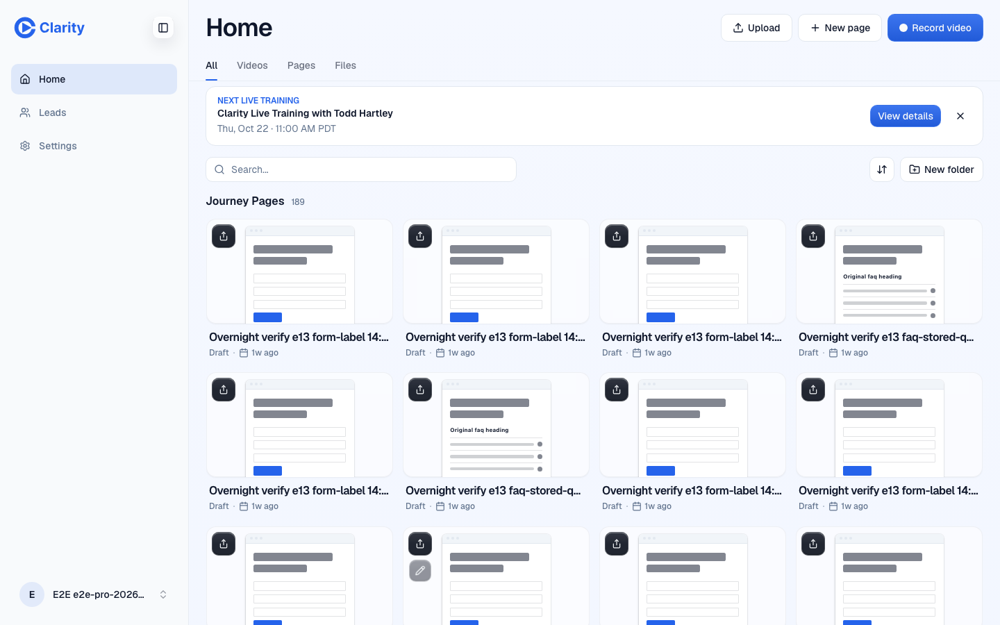
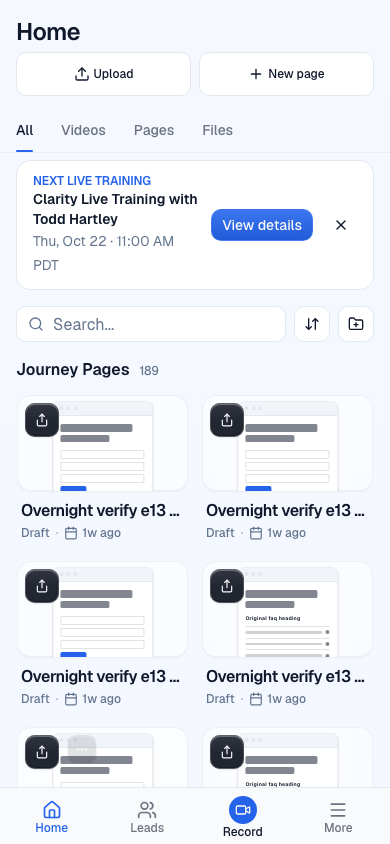
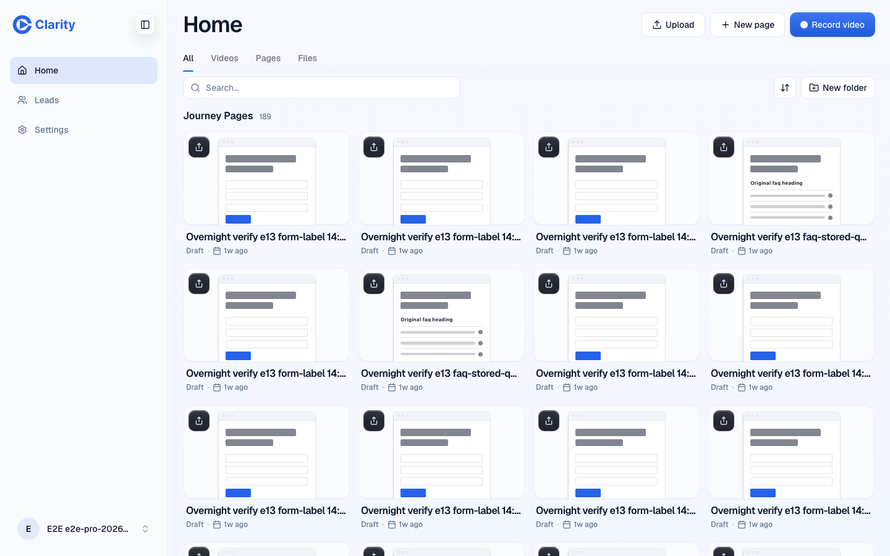
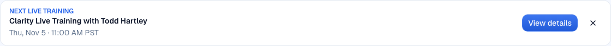
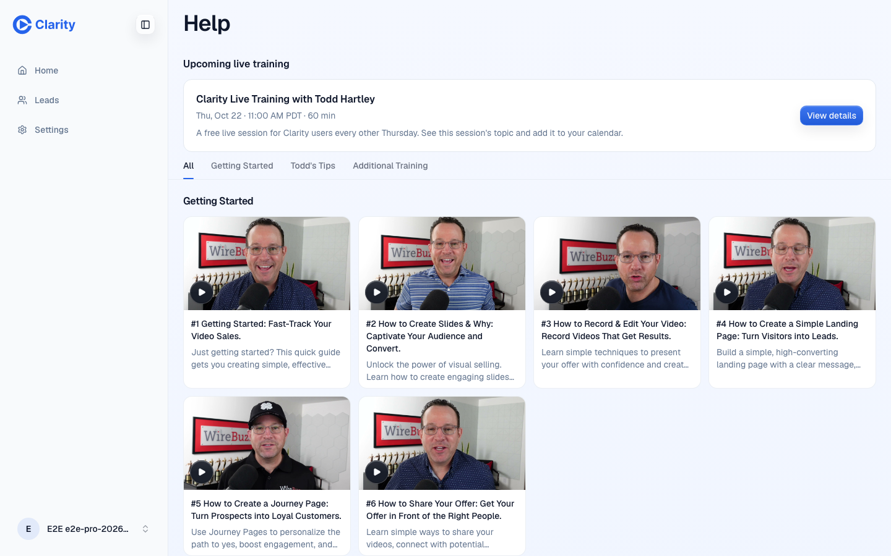
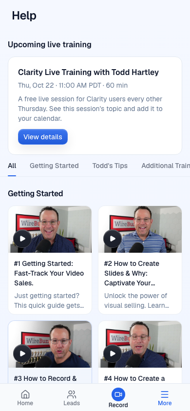
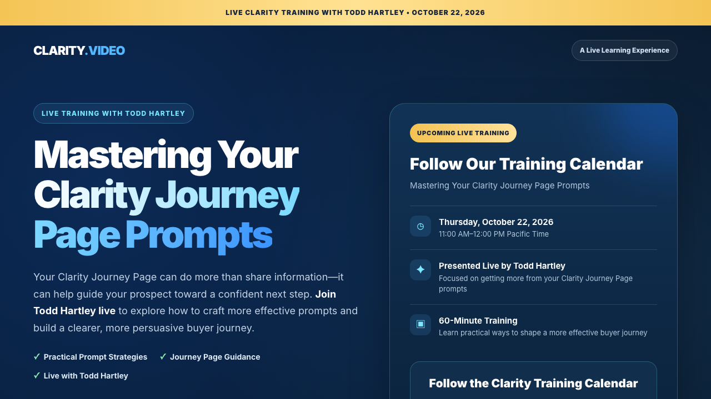
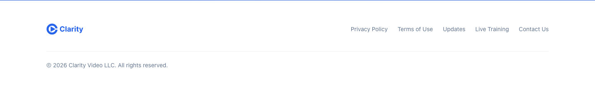
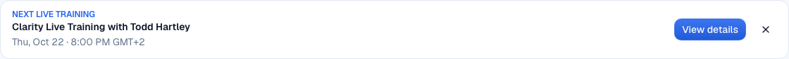

Live training: one landing page, automatic schedule
Every live training link in Clarity now opens lp.clarity.video/live-training. The app works out the next session by itself: every other Thursday at 11:00 AM Pacific, starting Thursday, October 22, 2026. Nobody has to add an entry for each session.
Screenshots come from the branch running locally on 20 October 2026, signed in as the e2e test account. Times appear in each viewer's own timezone. Most shots use Pacific time. The last one shows a viewer in Europe.
Pull request: Clarity-Video-HQ/clarity#985.
Home: the banner
The banner sits above the library on the Home dashboard. "View details" opens the landing page in a new tab.


Dismissing hides one session
The × hides the banner for that session only, and it stays hidden after a reload. When the next session comes up, the banner shows again.

After October 22 it moves on by itself
Once the first session ends at noon Pacific, the banner shows the next one, two weeks later. Daylight saving time ends on November 1, so the start time reads PST, and it is still 11:00 AM.

Help: the upcoming session card
Main renamed Learn to Help and moved it into the account menu (#1513), so the card now sits on Help. Once you add the first recording, a "Live Trainings" tab of recordings appears here. Until then the tab stays hidden.


Where "View details" goes
The landing page belongs to the training team. It carries the topic, the date and the add-to-calendar buttons, and they update it for each session.

Site footer
The public site footer gets a "Live Training" link to the same page.

A viewer in Europe
The same session shows in the viewer's local time.
